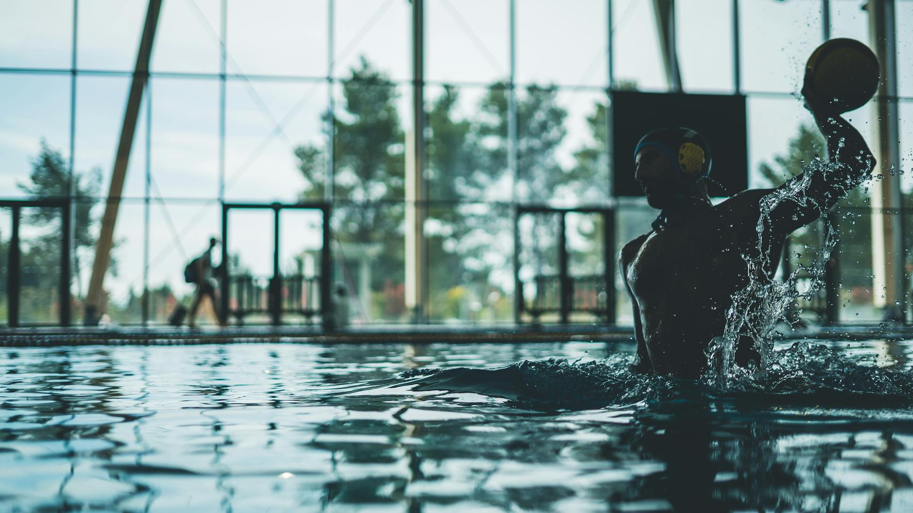

A Moment Worth Celebrating in U.S. Water Polo History
Team USA Men's Water Polo recently made an exciting announcement: a seven-match homestand that will also serve as a tribute to three retiring Olympians — Alex Obert, Alex Bowen, and Drew Holland. These athletes have dedicated years of their lives to representing the United States at the highest level of competition, and their send-off is a reminder of just how meaningful a career in aquatic sports can be.
For young athletes in Wesley Chapel, Land O' Lakes, and throughout the Tampa Bay area, this moment is more than a farewell. It is an invitation to dream bigger and work harder in the pool.
What a Career Like This Actually Takes
Olympic-level water polo players do not simply wake up one day with elite skills. Their journeys begin exactly where yours might — in a local pool, learning the basics of swimming, treading water, and developing a love for competition. The careers of Obert, Bowen, and Holland represent decades of consistent training, coachability, and resilience.
Here are a few qualities that define athletes who reach the top of their sport:
- Technical discipline: Elite players develop strong foundational swimming skills before mastering the strategic demands of water polo. Speed, endurance, and stroke efficiency matter at every level.
- Mental toughness: Competing on an international stage requires the ability to stay focused under pressure and bounce back from setbacks without losing confidence.
- Team-first mentality: Water polo is one of the most collaborative sports in the world. Players who thrive are those who trust their teammates and communicate constantly, both in and out of the water.
- Long-term commitment: There are no shortcuts to an Olympic career. Young athletes who stay consistent through the hard seasons — the early mornings, the challenging practices, the losses — are the ones who ultimately reach their potential.
Why the Tampa Bay Area Is a Great Place to Start
Florida's warm climate and thriving aquatic culture make it an ideal environment for young swimmers and water polo players to develop year-round. Communities like Wesley Chapel and Land O' Lakes have seen tremendous growth in youth sports, and aquatic programs are a meaningful part of that expansion. Families in this area have access to quality coaching and competitive opportunities that were once reserved for larger metropolitan markets.
At Nexar Aquatic Academy, we believe that every young athlete deserves a training environment that challenges them, supports them, and helps them grow — not just as competitors, but as people. The stories of athletes like Obert, Bowen, and Holland remind us why we invest in youth development from the very beginning.
Lessons Parents Can Share at Home
If your child is currently swimming competitively or playing water polo, this is a wonderful opportunity to start a conversation about long-term goals and what it means to pursue excellence with integrity. Ask your young athlete who their sporting heroes are and why. Talk about what retirement from a sport looks like when it is done with honor and gratitude.
Remind them that every lap they swim, every drill they complete, and every game they play is building something larger than a single result. It is building character, discipline, and a foundation for whatever comes next — in the pool and in life.
Keep Watching, Keep Training
As Team USA prepares to honor these three outstanding Olympians, families across the country are reminded of the beauty and depth that aquatic sports can offer. At Nexar Aquatic Academy, we are proud to be part of a community where the next generation of players and swimmers is already hard at work. The legacy of today's Olympians belongs, in part, to every young athlete who steps into the water with purpose and determination.
Who knows? The next great American water polo story might just begin right here in the Tampa Bay area.
Ready to get in the water?
First practice is completely FREE — no commitment needed.